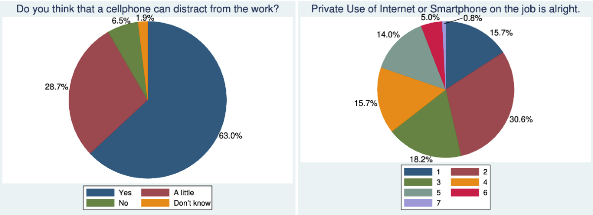

Life After Smartphones
In the modern world, now everyone has a smartphone. From kids as old as 5, to adults as old as 95, everyone has access to the internet now. Not only does this restrict people from interacting in person, and over all interacting less.
How It Affected Productivity Long-Term
Smartphones have affected us extensively, making it normal to always check your phone whenever they get a notification. They're addicted to their phones, always having to be attached to a screen whenever they have a free minute of time. Even during work, People will pull their phone out to check if they got any new alerts from their social media or any new texts from their friends.
Modern Social Skills
Now that Smartphones are used just about everywhere, people won't leave to go anywhere without them. From weddings to birthday parties, you will see people on their phones any chance they get. People will actively ignore you because they're too focused on their phone. Smartphones have ruined peoples social skills all around the world.